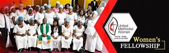
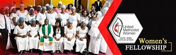

The Methodist Church was founded by John Wesley and his brother Charles Wesley in the 18th century as a part of the larger Christian movement. It emphasizes personal holiness and social justice.
Welcome to Dunwell Methodist Church-Konongo. Post Office Box-14.
Early Foundations: Dunwell Methodist Church, founded in [Year], emerged from the Wesleyan tradition with the vision of establishing a spiritual community rooted in the teachings of John Wesley.
Pioneering Leaders: The early years were marked by the guidance of visionary leaders who worked tirelessly to lay the foundation of Dunwell Methodist Church, setting the tone for spiritual growth.
Building a Spiritual Haven: From humble beginnings, the church grew in both membership and spiritual fervor, dedicating itself to creating a warm and welcoming environment for worship, learning, and service.
Community Outreach and Impact: Actively involved in various community outreach initiatives, Dunwell Methodist Church supports local charities and organizes events promoting community well-being, reflecting the Methodist commitment to social justice.
Spiritual Growth and Fellowship: The church is a place for spiritual growth and fellowship, offering weekly services, Bible studies, and various fellowship groups to deepen faith and build meaningful connections.
Adaptation and Progress: Embracing change and adaptation, Dunwell Methodist Church incorporates modern technologies and innovative approaches to ministry while staying true to its Methodist heritage.
Looking Forward: Reflecting on its history, the church envisions continued growth, spiritual enrichment, and an expanded role in positively impacting the lives of its members and the broader community.
Dunwell Methodist Church is a branch of Methodist Church.
| DAY | ACTIVITY | TIME |
|---|---|---|
| SUN | 1.Sunday Service 2.Youth Meeting |
7:30 AM - 10:00AM 6:30 PM - 7:30 PM |
| MON | Prayer Tower | 6:30 PM - 8:00 PM |
| TUE | Choir meeting | 6:30 PM - 7:30 PM |
| WED | Bible Studies | 6:30 PM - 7:30 PM |
| THUR | Morning Devotion | 5:00 AM - 6:00AM |
| FRI | MPRP | 6:30 PM - 7:30 PM |
| SAT | 1.Chur. Cleaning 2.Rehearsals |
4:30 PM - 6:00 PM 6:30 PM - 7:30 PM |


Joining Dunwell Methodist Church offers spiritual growth, a sense of community, and opportunities for service and fellowship.
Are you from another Methodist branch? Or in a fellowship in the church?
Or from other church (Presby, Roman, Church of Christ, Apostolic etc...) and you are
looking for an offline software for keeping records of your members,
keeping financial records, keeping members attendance, keeping daily
church enrolment, preparing annual church account etc...


Then you are at the right place to get
one.
Contact Benneth on: +233-533-420-206
Email: eyecongh14@gmail.com


.jpg) 

Leaders:
- Pastor: Mrs. Justina (+233-248-005-050)
- Steward: Mr. Emmanuel (+233-244-129-187)
- Secretary: Mr. Richard (+233-548-779-967)
Church Support Team: +233-248-005-050
Church Evangelical Team: +233-545-873-357
Email: info@dunwellchurch.org
Developer: Benneth (+233-533-420-206)